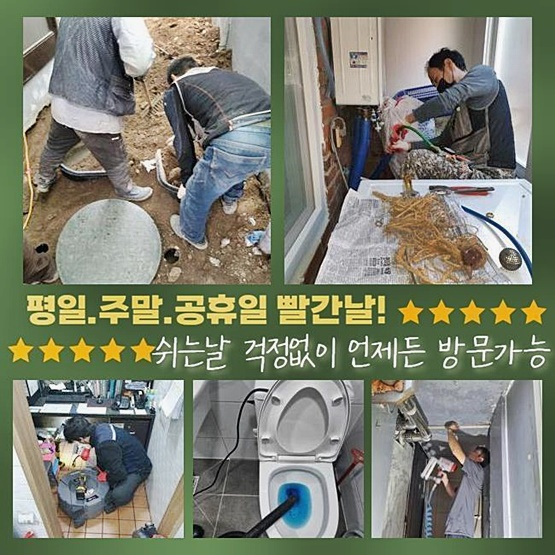
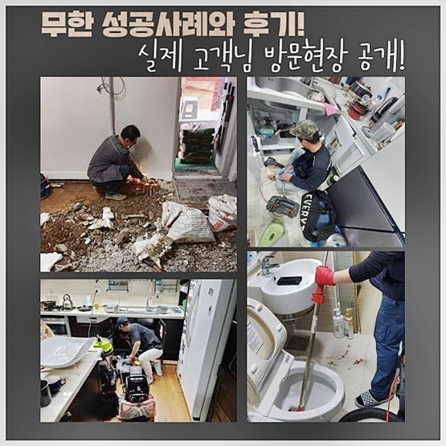
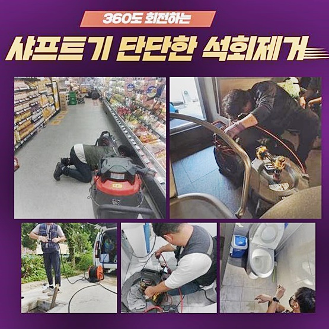
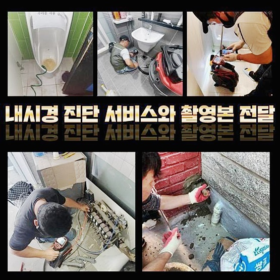
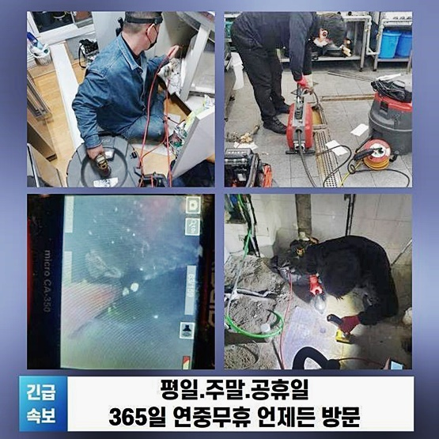
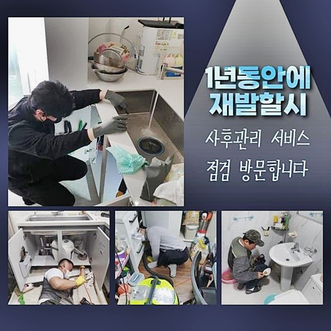
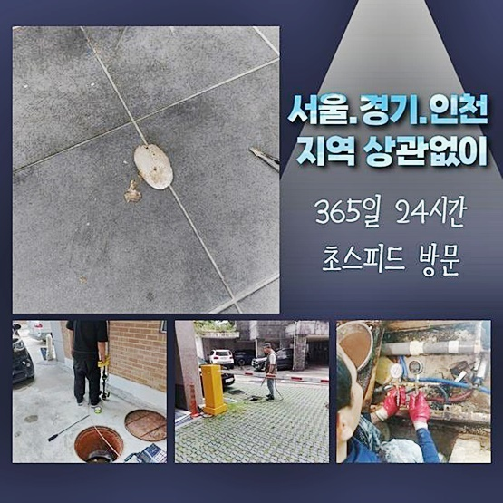

🏠 강북 수유동하수구역류 송천동 배수로뚫기 설비공사
용인 하수구막힘 전문 시공 후기

📋 작업 개요
- 위치: 용인
- 서비스 유형: 하수구막힘, 배관막힘, 집수정막힘, 역류해결, 뚫는업체, 배관청소, 설비공사
- 작업 일시: 2024. 7. 1. 11:27
- 업체명: 하수구수사대 (010-5615-2118)
🔍 문제 상황
강북 수유동하수구역류 송천동 배수로뚫기 설비공사
건물에 머물면서 몸과 식기를 씻는 등 여러 활동에서 물이 사라지면 난감할만큼 다량의 생활용수를 쓰죠
오염된 하수를 처리장으로 폐수하는 과정에서 욕실의 배수가 중단되어 배출구 근방에서 용솟음을 친다거나 고인물처럼 자리한 사태까지 초래되어 생활에 방해가 되기도 합니다
배수시설이 제기능을 못하면 사람답게 사는 기본 행위도 방해를 받고 역행했던 혼탁한 물웅덩이에서 퍼지는 냄새로인해 코를 막고 살아야만 하죠
초창기의 막힘 사태라면 녹여주는 용액이나 와이어를 집어 넣는 것으로 원활하게 막힌 측면을 나아가실 수 있을 겁니다
만약에 봉인된 파이프가 추정 자체가 안되거나 상당히 어둡고 좁고 매우 아래 파트라면 비전문가적인 소양만으론 다소 쉽지 않기에 전문가의 지혜를 이용하는 방법론이 옳습니다
이번 기회를 빌어 일반 주택의 하수구가 막힌 사고를 접할 때 저희는 어떤 청소장비를 쓰고 당면한 막힘 과제를 다루고 있는지에 관해 안내해 드리겠습니다
하수막힘은 통계적으로 모발이나 세제같은 찌꺼기가 끼어서 촉발될 때가 많아요
이번에 저희가 다루었던 시공장소를 분석해 보니 연락주신 호실에서만 배수구 통행 장애가 생긴 상황을 넘어섰습니다
빌라 내부의 모든 집에서 수돗물을 틀자마자 역류하는 불의의 사고가 생겨서 근방의 많은 거주자에게 지속적 불편을 야기하는 상황으로 판별됐어요

🔎 원인 분석
💡 전문가 진단: 정밀 진단 장비를 사용하여 슬러지의 고착 여부를 판명하고 타격/세척 작업을 실시했습니다.
배관이 고장나면 오염된 고인 물로 인한 퀘퀘한 냄새가 온통 진동하며 퍼져나가서 부정적 감흥을 조성하게 되는데다 물의 정상적인 이용에도 방해를 받게 됩니다
건물 전체의 배수에서 막힘이 생겨버린 지경이었으니 한 배수로에 국한되지 않고 마당에 자리한 하수구와 직결되는 부위의 조사가 더 의미있겠다 생각했어요
우선 중앙 시스템과 연계된 유체 이동 경로를 명확하게 알아내는 게 필요했으므로 관로 탐사기를 통하여 진단에 착수했죠
주파수를 사용하여 배수관에서 시그널이 나타나면 바로 알림을 주니 배관이 배치된 장소를 파악할 때 요긴하게 용도를 달성할 수 있습니다
호실마다 이어진 배관을 지정을 한 다음 관통하기 위하여 커버를 들어올렸습니다
배관이 정말 중단됐나 확정하고 넘어가려고 배관 촬영기를 집수시설로 쑥 집어넣어 봤는데요
내면 곳곳을 보니 각 집까지 이동하는 배관내부에선 슬러지 뭉치가 다수 감별됐어요
잘 관리하더라도 찾아오는 슬러지는 기름 잔량이 서로 달라붙어 거대하게 집합하는 결합체입니다
주방 싱크시설에서 식재료로 음식하거나 그릇을 씻으면서 산패된 기름류를 그냥 폐기해 버리면 경로를 따라 내려가지 않고 배관에 결착하고 맙니다
작은 실수에서 시작됐지만 단일 가정을 넘어서 공통 생활시설에서 고통을 앓게 되는 물의 이동경로가 봉인되고 고스란히 머무르는 사태가 피어오른 사건이었어요

🔧 작업 과정
막힌게 확실시 됐으니 막힌 측면을 없애는 일정이 진행돼요
접착력이 강한 슬러지를 효과적으로 삭제하려고 플렉스샤프트를 써서 도움을 받고 있습니다
기기 말단의 예리함으로 강하게 부착되어있는 슬러지들을 긁어내고 삭제시켜주는 기기로 배관 속을 말끔하게 청소하여 막힌 부분을 조치를 취하고 있지요
샤프트의 작동방식을 모르고 대강 이용해 버리면 파이프에 데미지가 생성되기 때문에 숙련공의 신중한 절차가 필요하겠지요
배관속 더러운 소재들을 잔잔한 입자로 만드니 까맣게 퇴색됐던 기름기 많은 퇴적층들이 액화가 되어 아래로 물꼬가 트이듯 이동하는 걸 목도하게 되어 뿌듯했네요
굵은 배관라인을 케어했으니 잘게 나뉜 소배관들을 살펴볼 때가 됐어요
커다란 야외 집수정에 트러블이 머물렀었으니 이어진 작은 하수관들도 덩달아 마비됐을테니 각 주민들의 공간에서 개별적인 뚫음이 들어가야 하는 상황이었죠
바깥쪽 시설의 이슈를 처리해도 잔가지들도 봉쇄된 시점이라면 각 욕실의 물길이 저절로 트이지 않을 가능성이 농후하니 일일이 처리해줄 단계였죠!
모든 절차는 현장의 현황에 맞게 합당하게 처리해 나간답니다
가정용 수도관 정비를 완료한 다음에는 집수정에서 훨씬 풍성한 양의 슬러지가 터져나오는 걸 가까이서 볼 수 있었어요
잘 뚫렸는지 확인하려고 각 세대와 통한 관로를 철저히 샅샅이 훑어보면서 두루 살펴보았어요
작업을 시행해주기 과거와는 뚜렷이 구분되게 투명하게 소통되는 내측을 볼 수 있었네요
내부에 머문 이물질을 온전히 비워낸 물길로 액체가 이동하는 상태를 감지할 수 있었어요
모든 배관들의 정리정돈을 실행했으니 모든 수로에서 이용한 하수가 다시는 역으로 분출된다거나 물웅덩이를 형성하는 등의 모습은 안 보일 거예요!
파이프라인을 닦아줬으니 본래의 편안함을 회복한 하수시설을 통해서 제약 없이 수돗물을 소비하실 수 있습니다
중앙시스템 내부에는 분쇄해서 형성된 유분기 어린 하수만 유출된 것이고 고체인 굵은 입자들은 수면에 고여있으니 건져내면 일이 끝나죠


✅ 작업 완료
내부로 흘러들어간 기름이 슬러지화가 진행되어 다른 오염원과 달라붙어 통로를 막은 사안이었기에 동시에 건물 내 세대에서 다량의 하수를 이용하며 수압을 이기지 못한 것으로 추측해보게 됐네요!
청소 단계를 다 완수하고 다량의 물을 내려보내더라도 움직임이 괜찮은지 통수 확인을 해보았는데 제기능을 하는 것을 점검하여 이번 과제를 갈무리하게 됐습니다!
욕실영역의 배수시설의 고장의 원인에는 제한이 없기 때문에 올바른 접근을 하려면 기술력과 지식으로 막힘 근원부를 추적하여 효과좋은 기계를 동원해서 모두 관통시켜야 합니다
시설물이 고장났다 하여 속상해 하시지 말고 유속의 급격한 저하가 있을 때 처리를 해달라 전화하시면 신속하게 막힌 사안을 씻은듯 낫게 해드리도록 최선을 다할 것입니다
스케줄에 맞는 도착이 이뤄지게 해드릴테니 근심하시는 것은 뒤로하고 지금바로 전화주시면 됩니다




⚠️ 하수구 배관 막힘 예방 및 관리 가이드
- ✅ 머리카락, 비닐, 물티슈 등 물에 분해되지 않는 이물질은 하수구 유입을 절대 금지해 주세요.
- ✅ 하수구 거름망을 씌우고 모여진 이물질은 주기적으로 쓰레기통에 바로 비워주셔야 합니다.
- ✅ 배관 노후가 심할 경우 이물질이 더 쉽게 걸리므로 주기적인 배관 세척(고압세척 등)을 권장합니다.
- ✅ 작업 후 1년 이내 재발 시 하수구수사대에서 무상 A/S 보증 서비스를 제공합니다.
💡 핵심 정리
- 확실한 장비 작업(내시경 점검 및 샤프트 스케일링)으로 원인을 뿌리 뽑습니다.
- 작업 후 1년 이내에 동일한 부위 재발 시 100% 무상 A/S 서비스를 보장합니다.
- 서울 · 경기 · 인천 전 지역에 24시간 언제든 긴급 출동할 수 있도록 항시 대기 중입니다.
❓ 자주 묻는 질문 (FAQ)
🚨 용인 하수구막힘 문제로 고민이신가요?
정확한 원인 진단과 확실한 시공으로 재발 없는 해결을 약속드립니다.
24시간 긴급 출동 | 서울 · 경기 · 인천 전지역 | 1년 내 재발 시 무상 A/S